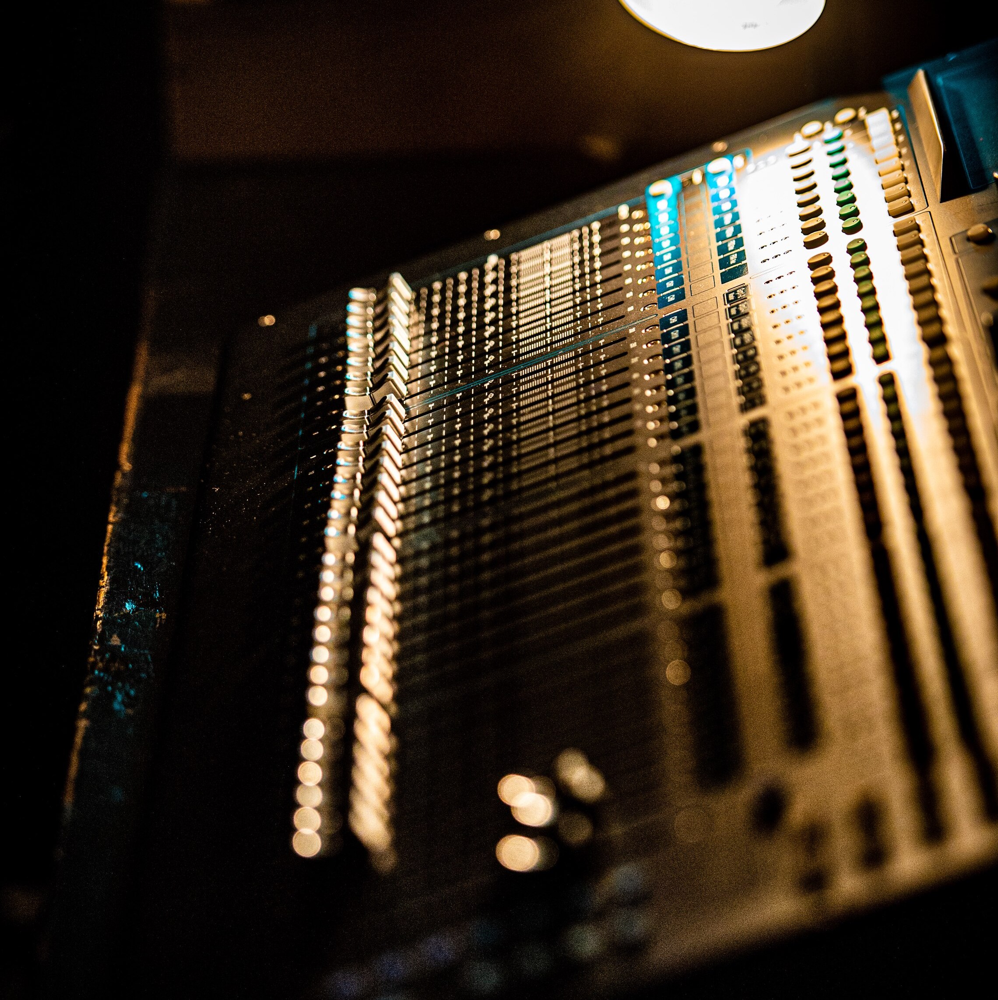
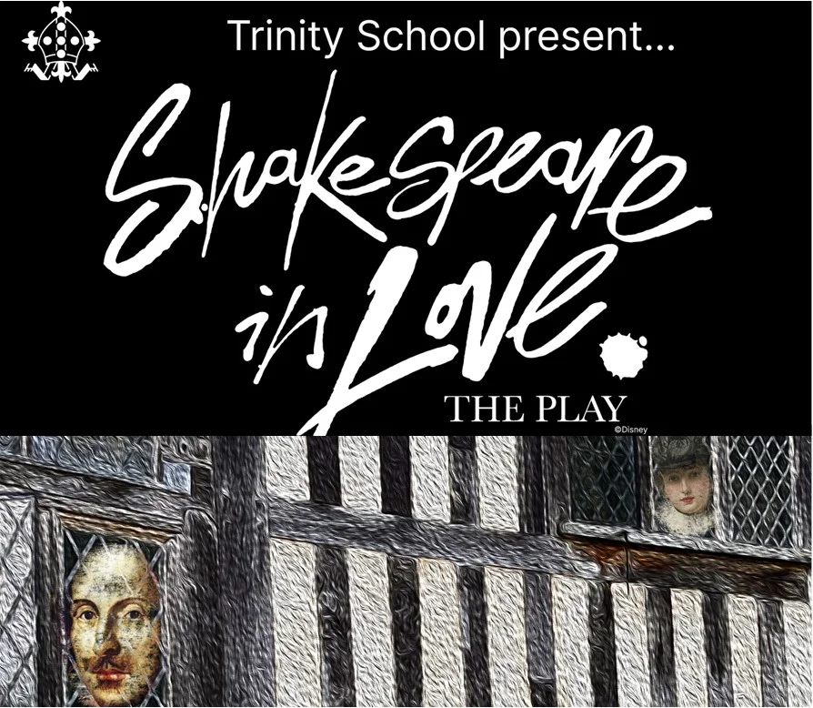
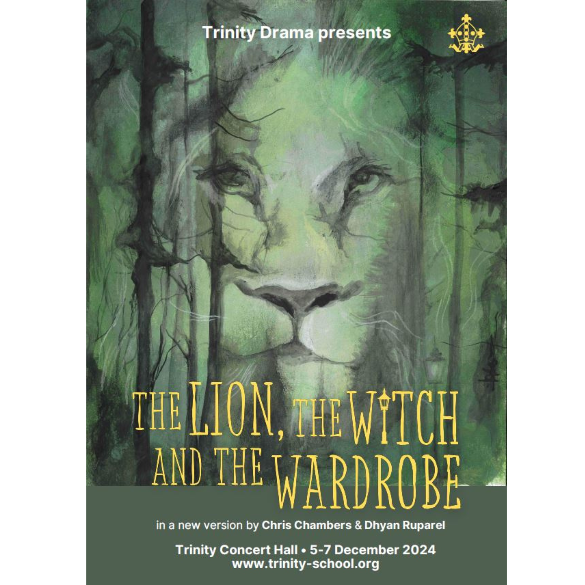

Technical Theatre at Trinity School
Overview
I helped with the backstage in several drama productions at Trinity School during my time there. Below is a list of some of the shows that I helped with. Over my time at Trinity I helped with scene changes, prop management, radio mics, sound effects, live bands, projections and scene building.

The Customer is always right
The Customer is always right was a play written by a student and performed by a small group of first and second years. This was my first show at Trinity and I had to manage 4 radio mics on the major actors as well as a small list of sound effects. There were some struggles with this show since I was given an analogue desk and I was learning all the equipment on the job.

Cyrano de Bergerac
Cyrano was my first show with the digital sound desk, the Qu-16 from Allen & Heath. This newer desk allowed for more opportunities with the sound mixing. The show provided many challenges, mainly due to it being outside — the placement of speakers, volume control and the wind caused a lot of issues with the radio mics that were being used.

Joseph
Joseph was my first big musical, because of how big the show was I was in charge of the radio mics and not the sound desk for this show. I was backstage helping with the props and monitoring the 15-20 microphones, making sure that they did not run out of battery and that they maintained connection to the desk throughout the whole show.

Shrek the Musical
In Shrek I spent most of my time as a stage hand. Moving the larger pieces of set, following the script from backstage and making sure that everything was running smoothly. I had a direct communication line to the box via a headset and had a small team of other stage hands that I had to manage and direct to move the smaller pieces of set. I was also very involved in the get in days where we built the set for the show.
Medea
Medea was a sixth-form-only show; however, since they needed a technical team, I was asked to be the sound technician even though I was only in my fourth year. It was my first chance to work with 'proper' actors rather than lots of excited 11 year olds. I was allowed a little freedom on which sound effects I chose and I had to design the QLab file from the beginning. It remains one of my favourite shows that I have done at Trinity.

The See Saw Tree
The See Saw Tree was almost the opposite of Medea: it was only a lower school production (11-14 year olds) and remains my least favourite show that I have done. However, I was given full freedom on the sound design for the show, and I really enjoyed picking and choosing which sound effects worked and where they should go in the script. The show was mainly a problem from a tech point of view because of the number of shotgun mics required, as you could not hear the cast outside. Overall the show was a key learning experience with lots of ups and downs throughout.

Shakespeare in Love
Shakespeare was the first time that I was in the box in the main hall during a show. I was in charge of all the sound and had to run almost 20 microphones while also managing the sound effects for the show. For this show I was using the larger Qu32 digital sound desk and utilised the in built screen to make sure that all of the levels for the audio were correct.

Wizard of Oz
For the Wizard of Oz we hired in a team to help with the sound. I helped them set up the radio mics and helped with putting them on the cast, before and after the show. During the show I was helping with projections, I was sitting in the middle of the box and had set up 2 projectors aiming at areas where we were projecting onto. This was a new experience for me and I really enjoyed learning the new skills.

Afterlife
Afterlife was the last small show that I ever did. I was once again back on the sound desk and given full control over the music and sound effects for this show. The show leaned heavily into creating a strong emotional impact with the audience, so audio choice and timing were critical. The show was a great success and, despite the technical challenges, ran very smoothly across all the performances.

The Lion, The Witch and the Wardrobe
The Lion, The Witch and the Wardrobe was the last show that I ever did at Trinity. It was adapted into a musical and had a live band. I was put in charge of sound effects and projections for this show, as we had hired in people to do the microphones. There were a lot of cues in the script since the show was heavily centred around the use of projections and sound effects to sell the magic, and I made custom animations for snow in the background of several scenes. On one of the days we had a new person on the lighting desk who needed lots of help, which left me without a DSM — but I managed to operate everything on time without a DSM or a marked script, thanks to my knowledge and the work I had put into the show up to that point.
